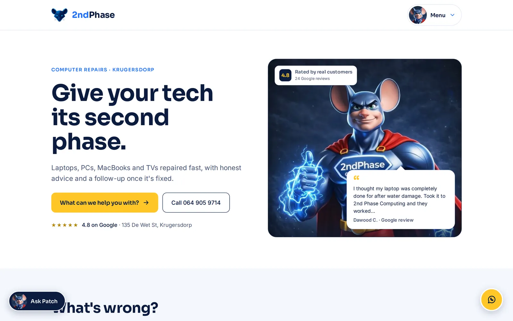
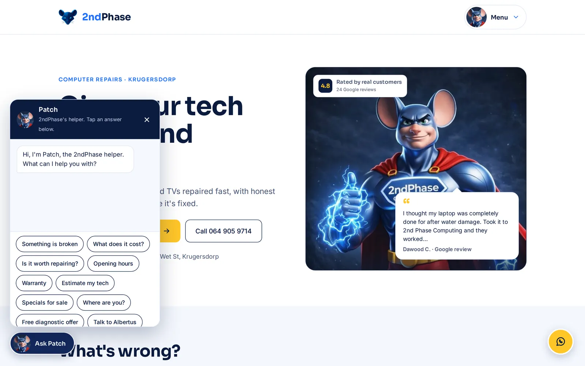
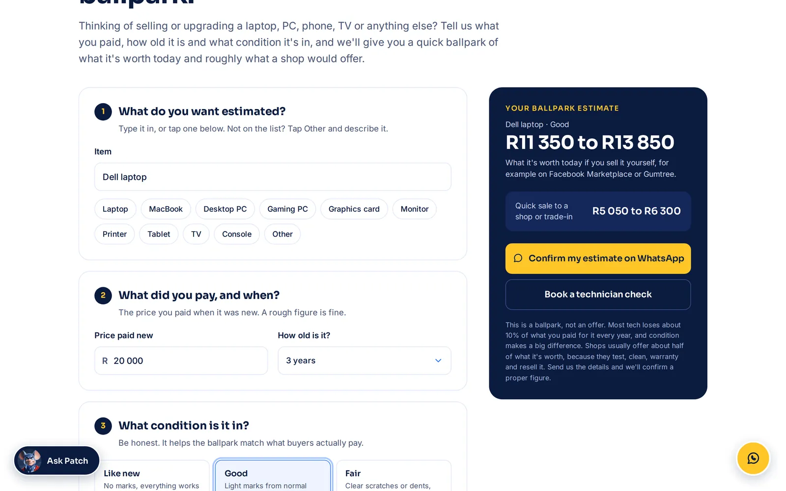
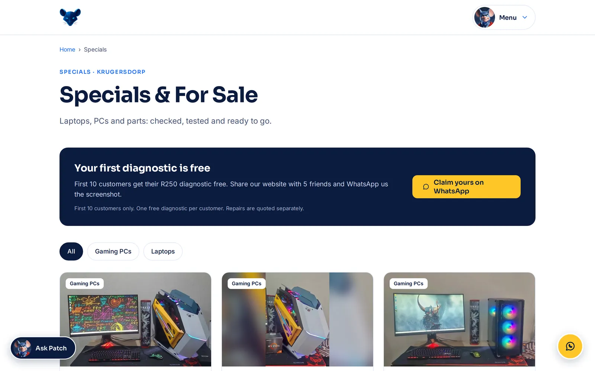
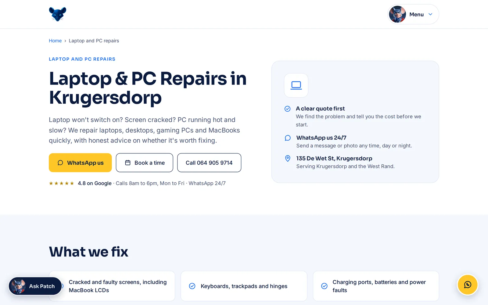

Case study · Brand & Web · Well Dunn Group
2ndPhase
From "something's broken" to talking to the shop in two taps.
01The brief
A busy repair shop with a 4.8-star Google rating and no website.
The owner wanted a simple site that gets visitors to a solution fast and lets them reach him quickly, plus local SEO and Google Ads to bring in work. So the whole site is built around one question: what's wrong? Not tech terms. The customer's problem, in their words.
02The brand
The client's superhero character, worked into the site with an animated thumbs-up that greets first-time visitors.
The mouse mark and wordmark in full colour and reversed, plus an app icon, favicon and a brand and website guide.
Sora and Inter for type. Navy, electric blue and gold for colour.
03What I built

Nine tap-to-choose problems, each leading to the right service page, a pre-written WhatsApp message and a booking form.

A tap-to-answer helper for cost, hours, warranty and quick fixes, then a hand-over to WhatsApp with a summary. No AI, no monthly bill.

A five-step ballpark calculator for second-hand devices, using the owner's own pricing. Every estimate can go to WhatsApp with a photo, so every check becomes a lead.

Stock by category with "Ask about this" buttons, plus a launch offer for the first customers who share the site.

Written for searches like "laptop repairs Krugersdorp", with its own title, description and business details for Google.
- WhatsApp-first contactEvery button opens WhatsApp with the details already typed. The Call button hides outside business hours, and phones get a Call and WhatsApp bar fixed to the screen.
- Real trustThe 4.8-star rating and real Google reviews, each matched to its service page.
- Easy to runA Python build system turns one content file into every page, so prices, specials and reviews change in one place. No database, no WordPress, cheap to host.
- The detailsA POPIA privacy page, a custom 404, automated tests on every page and step-by-step hosting instructions.
04Beyond the website
The site launches with a plan to fill it: a phased Google Ads campaign that starts at R750 a month in Krugersdorp and Mogale City, a Google Business Profile and Search Console. I also mapped out the client's next phases with him: a local services directory, a "Verify The Deal" device-checking service, and lead generation ideas with pricing research.
See the marketing planResults to add once the site has been live for a few weeks: enquiries, WhatsApp clicks and Google rankings.